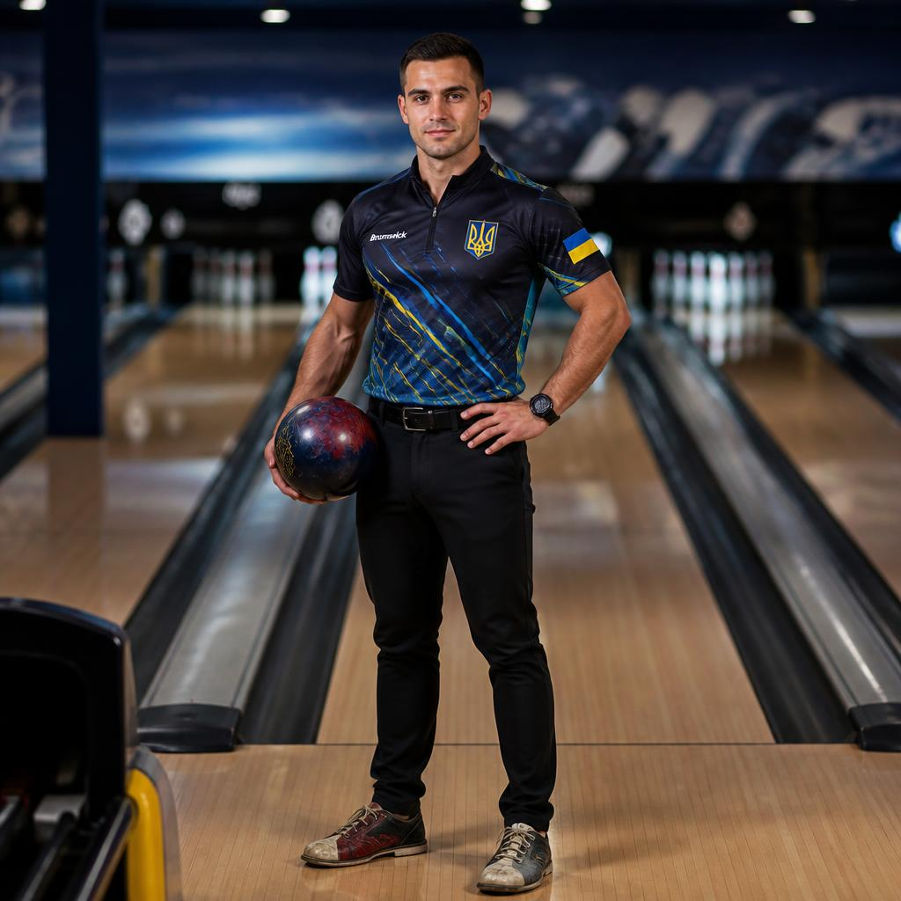
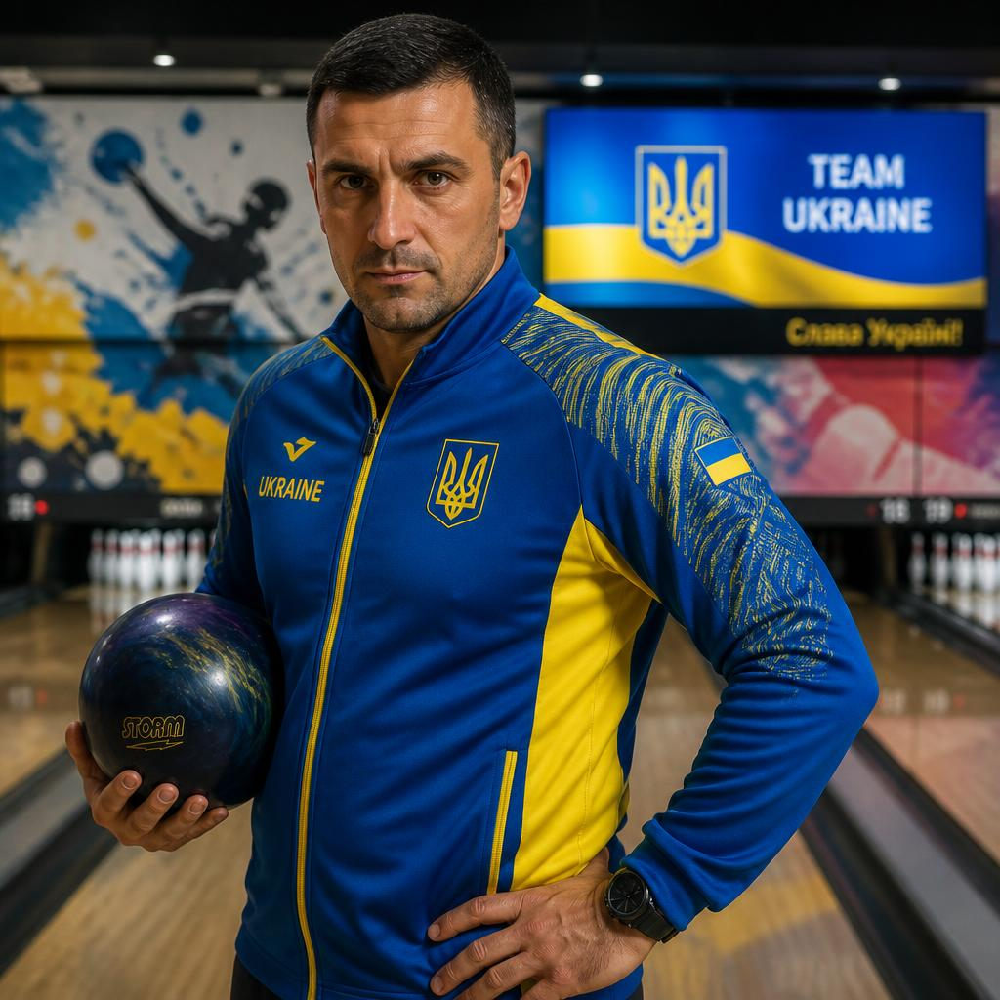
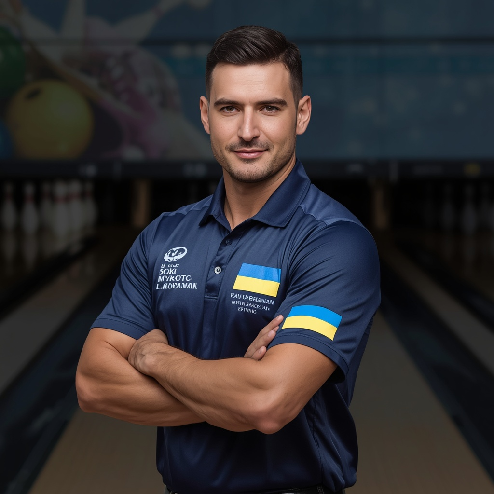
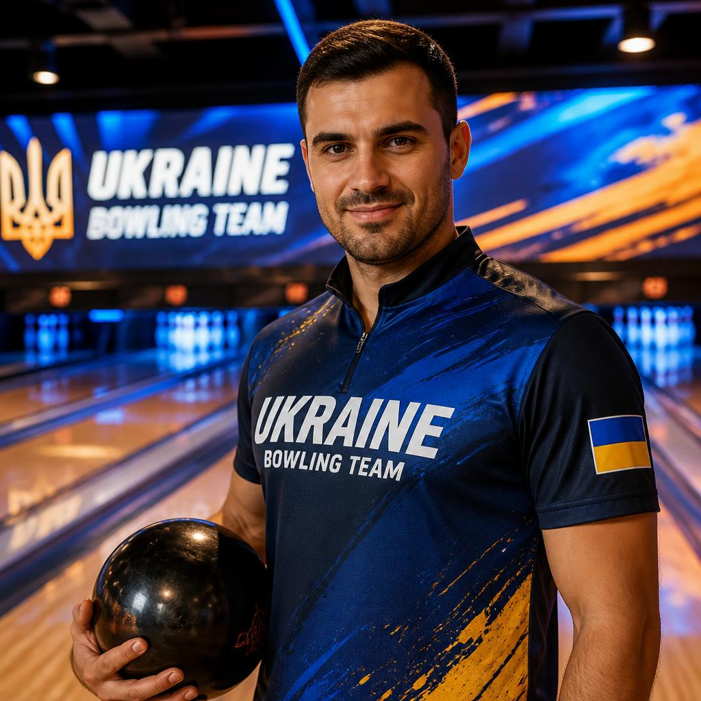

Боулінг — надзвичайно популярний та азартний вид спорту, коріння якого сягають Стародавнього Єгипту, а сучасного вигляду він набув у США в XIX столітті. Гра вимагає від спортсмена точної координації, вміння підбирати правильну вагу кулі та розраховувати дугу її обертання на доріжці. Найпрестижніші змагання: Світовий тур PBA (Professional Bowlers Association), Чемпіонат світу з боулінгу (World Bowling) та Кубок Вебера. Легенди цього спорту — Джейсон Белмонт, Волтер Рей Вільямс, Ерл Ентоні. Боулінг розвиває м'язи рук та спини, окомір і стратегічний підхід.


Партія складається з 10 фреймів (турів). У кожному фреймі гравець має два кидки, щоб збити всі 10 кеглів, встановлених у кінці доріжки. Якщо всі кеглі збиті першим кидком, це називається «страйк» (strike), якщо двома — «спер» (spare). За страйки та спери нараховуються додаткові бонусні очки за наступні кидки. Заступати за лінію старту під час кидка суворо заборонено — такий кидок не зараховується. Перемагає той гравець, який за підсумками 10 фреймів набере найбільшу сумарну кількість очок (максимум 300).
Професіонали, які допоможуть вам досягти ідеального результату
Михайло Коваленко — Боулінг. Досвід: 9 років. Спеціалізація: базовий кидок з прямою траєкторією, підбір ваги кулі, постановка кроків на розгоні. Досягнення: кандидат у майстри спорту, переможець національного аматорського кубка. Про себе: «Поставлю правильну анатомію руху рук та ніг, допоможу позбутися заступів та навчу стабільно збивати центральні кеглі».

Ярослав Бойко — Боулінг. Досвід: 12 років. Спеціалізація: професійне кручення кулі (хук-кидок), читання масляного покриття доріжки. Досягнення: багаторазовий чемпіон України, сертифікований інструктор за стандартами ETBF. Про себе: «Навчу запускати кулі по красивій дузі для ідеального страйку та підлаштовуватися під будь-який тип покриття».

Олексій Мельник — Боулінг. Досвід: 7 років. Спеціалізація: добивання складних сплітів (кеглів, що залишилися далеко одна від одної), тактика фреймів. Досягнення: срібний призер міжнародного турніру в Польщі, майстер спорту. Про себе: «Зі мною ви дізнаєтеся математичні секрети закриття найскладніших комбінацій кеглів після першого кидка».

Дмитро Кравченко — Боулінг. Досвід: 5 років. Спеціалізація: початкова підготовка дорослих, психологічна концентрація, вибір індивідуального екіпірування. Досягнення: інструктор року за версією локальних клубів. Про себе: «Допоможу підняти твій середній результат з 100 до 180+ очок за короткий час завдяки виправленню дрібних помилок».

Роман Федоренко — Боулінг. Досвід: 6 років. Спеціалізація: тренування дітей та підлітків, розвиток гнучкості кисті, ігрові вправи на влучність. Досягнення: організатор дитячої ліги боулінгу, дипломований спортивний педагог. Про себе: «Навчаю дітей у легкій формі, ставлю безпечну техніку кидка та розвиваю лідерські якості на доріжці».